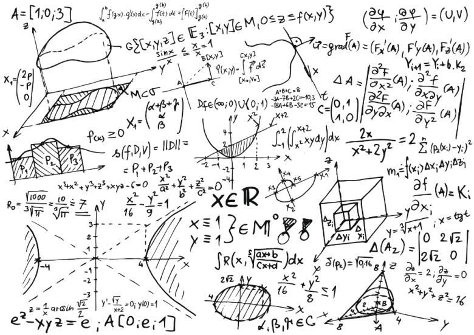

After you're done, scroll down to continue reading.
Ok, now lets talk about what you saw there.
Those wonderful creatures are called "CATS".The cat (Felis catus) is a domestic species of small carnivorous mammal. It is the only domesticated species in the family Felidae and is often referred to as the domestic cat to distinguish it from the wild members of the family. A cat can either be a house cat, a farm cat or a feral cat; the latter ranges freely and avoids human contact. Domestic cats are valued by humans for companionship and their ability to hunt rodents. About 60 cat breeds are recognized by various cat registries.
Mathematics is the science that deals with the logic of shape, quantity and arrangement. Math is all around us, in everything we do. It is the building block for everything in our daily lives, including mobile devices, architecture (ancient and modern), art, money, engineering, and even sports.
Since the beginning of recorded history, mathematic discovery has been at the forefront of every civilized society, and in use in even the most primitive of cultures. The needs of math arose based on the wants of society. The more complex a society, the more complex the mathematical needs. Primitive tribes needed little more than the ability to count, but also relied on math to calculate the position of the sun and the physics of hunting.
The study of math within early civilizations was the building blocks for the math of the Greeks, who developed the model of abstract mathematics through geometry. Greece, with its incredible architecture and complex system of government, was the model of mathematic achievement until modern times.